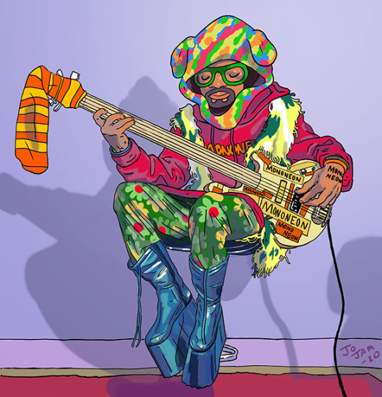

CURIOSIDADE DO CONTRABAIXO
Contrabaixo acústico se popularizou e ganhou a versão elétrica em 1951 com o Leo Fender, porque havia a necessidade de ganho de volume de áudio e de precisão das notas e praticidade de transporte, surgiu o contrabaixo elétrico com mais precisão nas notas com o traste no braço do contrabaixo que no acústico não havia (fretless) e menor tamanho com semelhante corpo da guitarra elétrica.
Atualmente existe contrabaixo elétrico de 4, 5 e 6 cordas e até 12 e 24 cordas, com trastes, sem traste (fretless), semiacústico que é hibrido do som acústico com captação elétrica, baixolão que assemelha ao corpo de um violão, e contrabaixo elétricos que imitam o som do acústicos Rabecão como os Upright.
O som do contrabaixo hoje em dia está presente em todos os gêneros musicais e ritmos como Samba, Pagode, Rock, Pop, MPB e entre outros, no passado tinham em mente que o baixo serviria de marcação musical intermediária entre o ritmo e a melodia. O contrabaixo elétrico começou a ganhar notoriedade com os sons de Jaco Pastorius com seus groove e solos e Larry Graham com a técnica de “SLAP”.